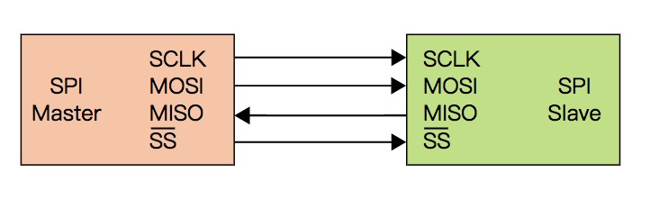
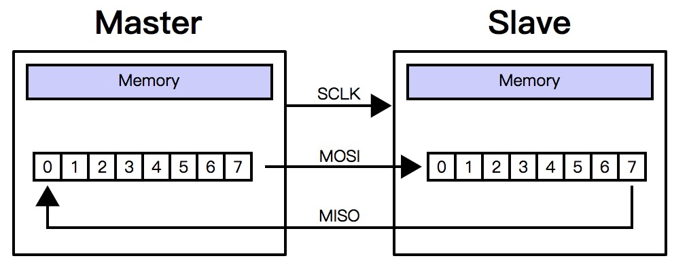
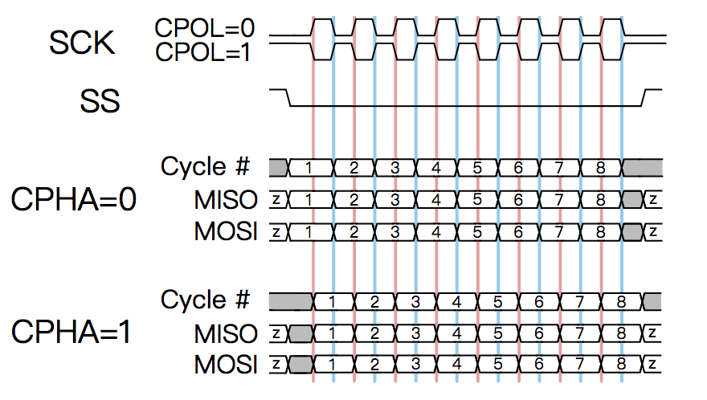
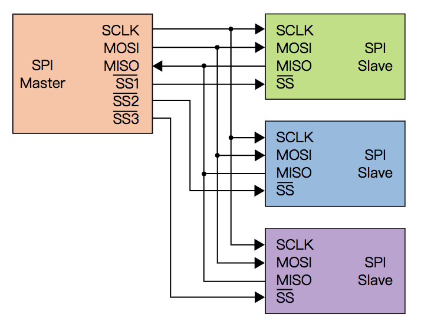

SPI协议简介
文章目录
一. 引言
只要你使用过树莓派、arduino或者单片机之类的东西，一定少不了和各种传感器打交道。两个设备之间通信，就会涉及到协议的问题。所谓协议，听起来很高端，说白了就是一种约定。计算机的世界里，只有0和1两个数字，大家都按同一种规则收发消息，才能明白对方在说什么。我们平时用到的usb、蓝牙、wifi，都是一种协议。
最简单的传感器，比如红外感应模块、触摸模块等，只需要向宿主机传输某种状态变化的信息。那么就可以用闲时高电平（或低电平），状态变化时低电平（或高电平）的方式表达。虽然看起来很简单，但这也算一种协议。
再稍微复杂点，比如温湿度模块，只需要传递少量的数据。这种情况有可能用一些私有协议，比如主机切换高低电平表示开始检测，传感器会按照一定规则返回数据，主机再按照使用说明按特定规则解析这些数据。这种情况下，每个传感器的协议都不尽相同，需要在使用前好好看一下说明书。
随着数据交互复杂度提升，使用私有协议就不那么方便了，毕竟让厂商为每个传感器都设计一套复杂的协议，用户每用一个都需要重新学习一种协议，这种事情怎么说都划不来，所以一些公开的标准就出现了。好在嵌入式领域最常见的协议只有三种，学起来也不会脑壳疼，它们分别是：SPI 、IIC、UART。它们都可以用来传输复杂的数据，又有各自的优缺点。这篇文章就来学习一下SPI协议。
二. 简介
SPI全称Serial Peripheral Interface，翻译一下就是串行外围设备接口。所谓串行，表示数据是一位一位依次传递的。与之对应的就是并行，表示可以同时传输多位数据。而外围设备，多少体现出这是一个主从结构的协议，通信的双方并不是平等的，而是主机控制从机。

看图说话，SPI的接线虽然有四条，但是每条都职责清晰，理解起来很容易。
- SCLK(Clock)：表示时钟信号，设备双方在有信号时交换数据。
- MOSI(Master Output Slave Input)：顾名思义，主机向从机传输数据的连线。
- MISO(Master Input Slave Output)：顾名思义，从机向主机传输数据的连线。
- SS(Slave Select)：有时会写成CS(Chip Select)，表示主机选择与该从机通信。
SCLK表明了主机在通信过程中的地位，注意箭头，时钟信号始终由主机产生，也就是说，在从机能接受的范围内，数据的传输速度是由主机控制的。MOSI和MISO分别用来向对端传输数据，这也就意味着理论上双方是可以同时向对方传输数据的（这是个知识点，后边要考的）。SS用来选择通信的从机，也就意味着SPI协议可以支持一主多从的架构。假如我们设计一种一主一从的协议，理论上可以不需要这条线。
三. 数据传输
主机拉低SS电平，表示开始与对应的从机通信，然后在SCLK上产生时钟信号。这里注意一下，有些从机通信前需要一定的准备时间，所以主机需要等待相应的时间再开始产生时钟信息。

接下来就要注意了，在一个时钟周期里，主机通过MOSI向从机传输一位数据，从机也通过MISO向主机传输一位数据，也就是说主机与从机之间是同时交换数据的。即使你只想单方面通信，这种数据交换也会发生。
通信完成之后，主机停止产生时钟信号停止数据交换并拉高SS电平取消与从机对话。
四. 时钟极性和相位
前面说一个时钟周期交换一位数据，看起来很简单，但是深思一下细节的话，就没那么简单了。怎么定义一个时钟周期呢？可以是电平从低到高再到低，也可以是从高到低再到高，到底应该按哪个算？还有，不管是低高低，还是高低高，都会有两次切换边沿，那应该是第一次切换读数据呢，还是第二次切换读数据呢？
高电平有效还是低电平有效，被称做时钟极性(clock polarity)，简写为CPOL。而第几个边沿读取数据被称做时钟相位(clock phase)，简写为CPHA。这么看来，当两个设备用SPI协议进行通讯时，就必须事先确定这两个参数。而这两个参数结合就会出现四种组合：

- CPOL=0，CPHA=0。表示SCLK空闲时为低电平，脉冲产生时为高电平，双方在第一个切换边沿(低到高)读取对端数据，那么双方就可以在第二个边沿(高到低)的时候把数据切换到下一位，供一下个周期使用。这里需要细想一下，既然第一个边沿就要读取数据，也就意味在第一个时钟脉冲产生之前，双方就需要把第一位数据准备好了。
- CPOL=0，CPHA=1。依旧是闲时低电平，脉冲高电平，但是双方在第二个边沿交换数据。那么双方就需要在第一个边沿的时候把数据准备好。
- CPOL=1,CPHA=0。正好反过来，闲时高电平，脉冲低电平，双方在第一个边沿交换数据。
- CPOL=1，CPHA=1。闲时高电平，脉冲低电平，双方在第二个边沿交换数据。
上面这四种组合可以称做四种模式，分别是mode0到mode3。是的，这名字就是这么没有创意。 在使用支持SPI协议的模块时，就要看看它到底支持哪几种模式。这里我也不得不吐槽一下，直接规定一种模式多好，为什么要搞这么复杂。四种选择在技术层面又不分上下，完全是个人喜好而已。
五. 一主多从

前面说到SPI支持一主多从的架构，最简单的方式就是多个从机共享SCLK、MOSI、MISO三条线，然后各自接一条SS线，这样主机想和哪个从机通信，就拉低哪个SS，其它从机忽视三条线上的信号即可。但是有两个细节需要注意一下：
- 从机SS可以外接一个上拉电阻，以防止主机SS初始状态不确定
- 从机MISO需要支持三态逻辑(tri-state logic)，即在未被选择的情况下要保持高阻态，不能影响到通信
六. 优缺点
其实SPI还有不少细节可以深入，但是了解上述的这些知识就足以应对日常的使用了。那么我们想想SPI协议有哪些优缺点。
优点：
- 全双工通信。前面提到了主从是同时交换数据的
- 高吞吐量。既然数据交换速度由主机的时钟信号决定，那么理论上时钟频率越高，交换速度就越快。
- 传输灵活。每个时钟周期交换一位数据，那么想交换多少位数据就可以设置多少个周期，只要双方同意，也不需要在意是否整数个字节
- 接线简单。虽然四条接线，但是通过上面的介绍就可以看出来，每条线各司其职其实简单得很。
- 实现简单。硬件上简洁的结果就是软件实现上也很简单。
缺点：
- 从机无法进行流量控制。试想如果主机时钟频率很高，一股脑地传输数据，超过了从机的处理能力，那从机也无可奈何。
- 没有从机确认机制。主机只管发数据，可是并不知道从机是否真的收到了数据
- 没有错误处理机制。主机并不能确定从机收到了正确的数据
- 不支持热插拨。
参考资料：
文章作者 sosonemo
上次更新 2019-12-26